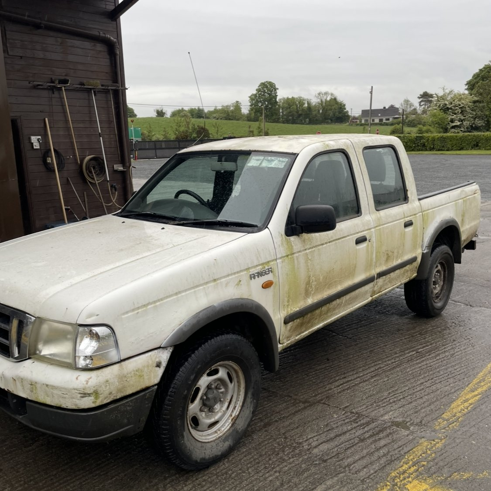
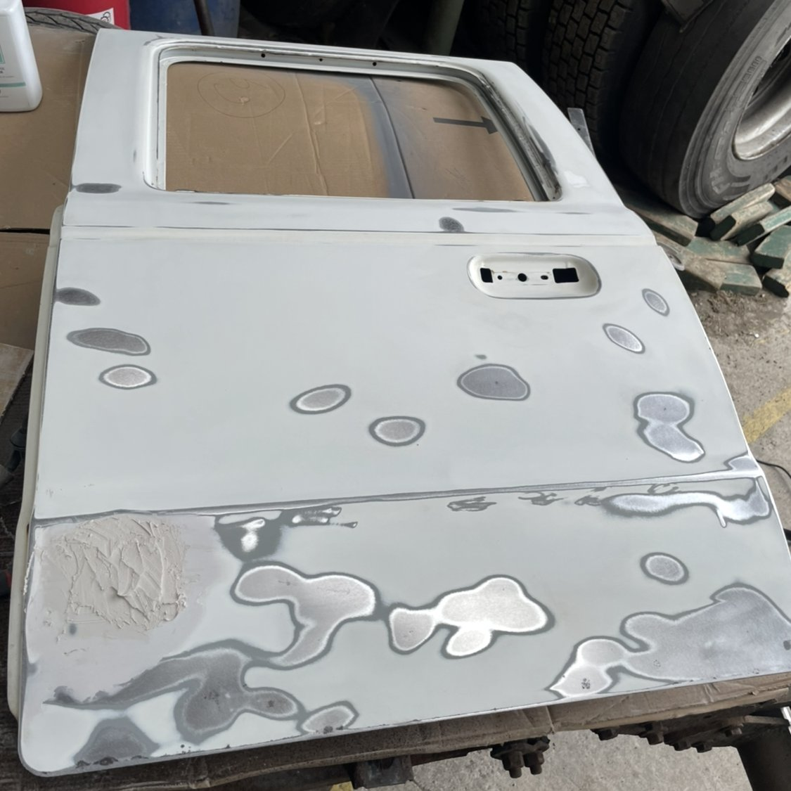
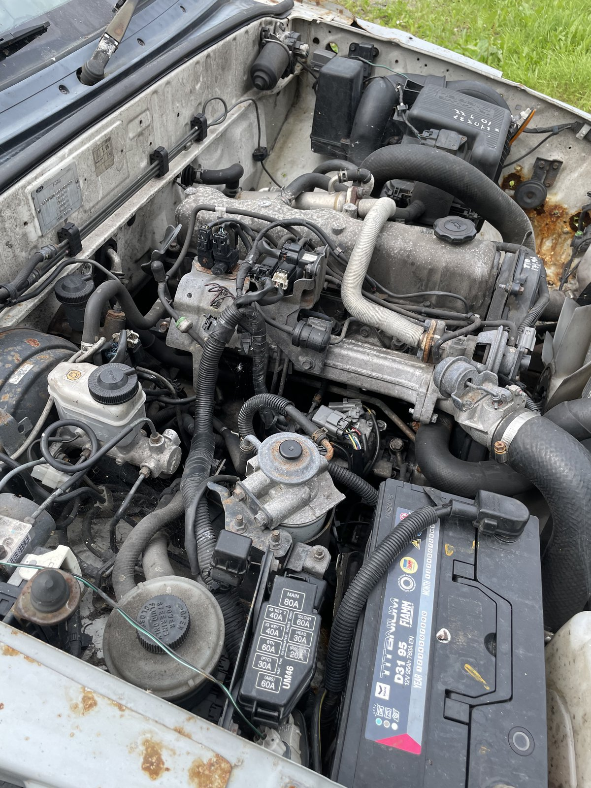
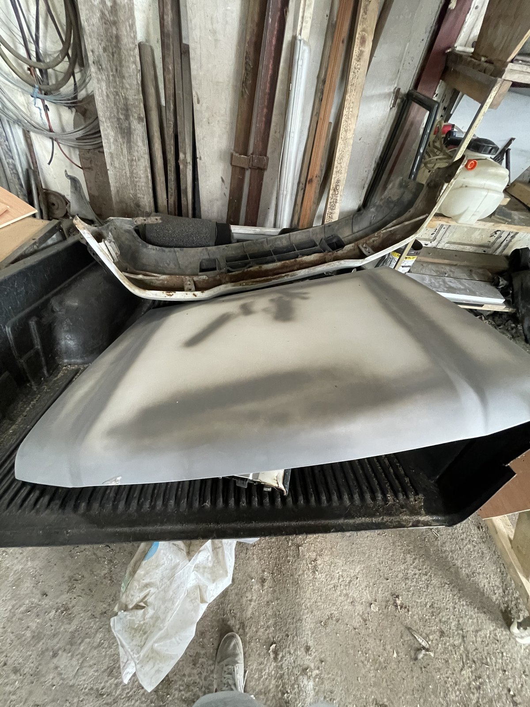
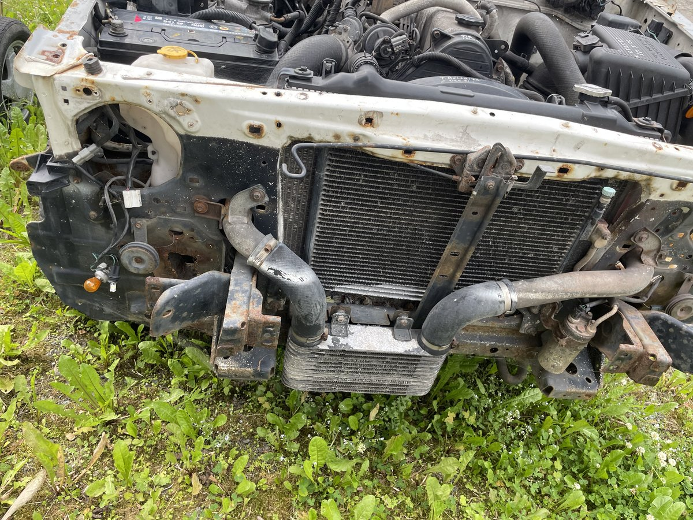

2003 Ford Ranger —
Full Vehicle Restoration
Full mechanical restoration covering suspension, driveline, and braking systems — hands-on disassembly, inspection, measurement, rebuild, and re-fit throughout.
Designed a custom steel front bumper from scratch in Onshape's sheet metal module: generated flat patterns with bend allowances, and produced fabrication-ready drawings with weld annotations, tolerances, and material callouts (mild steel). Liaised directly with the fabrication workshop through production, iterating the design to accommodate real tooling constraints, and verified final fitment on the vehicle.
Demonstrates an end-to-end design-to-manufacture pipeline: concept → CAD → engineering drawings → fabrication → fit and test.
"We will not put into our establishment anything that is useless."— Henry Ford Sr.
Progress so far





